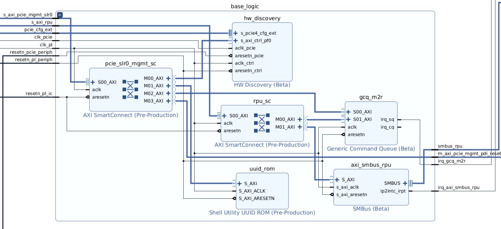
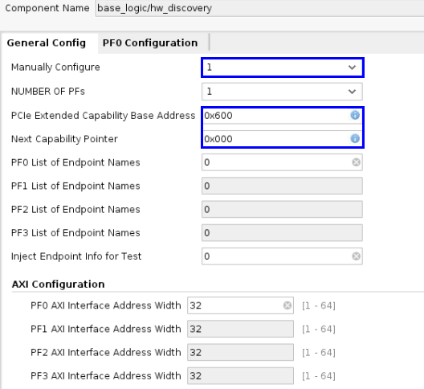
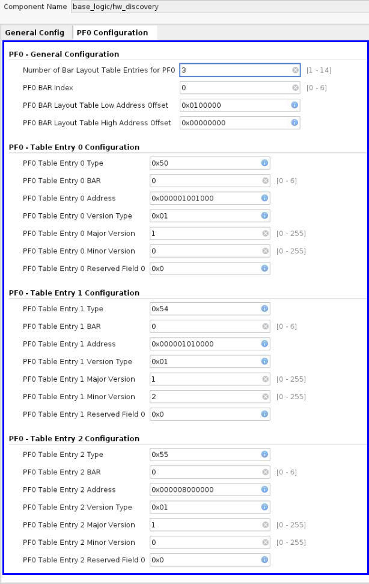

AVED V80/V80P - Base Logic¶
Overview¶
The base logic contains the management functionality of the AVED design. It is comprised of the hardware discovery IP, UUID ROM IP, management-to-RPU generic command queue IP, the PCIe management SmartConnect IP and the RPU SmartConnect IP.
From a PCIe perspective, management is achieved through the use of the physical function (PF0). This physical function is reserved for those with administrator privileges, protecting card management from other user functions, such as accelerator functions. AVED does not enable the User Physical Function.

UUID ROM¶
AVED uses a UUID ROM in the base logic of the design to store the universally unique identifier (UUID). The UUID is comprised of a 32 character hexadecimal string (128-bit), calculated using a MD5 checksum, that uniquely identifies the implemented design. Any change in the AVED design, placement, or routing will result in a different UUID value. The UUID value is automatically inserted in the UUID ROM (LUTRAM) of the routed DCP. Upon programming the AMD Versal™ device with the PDI, the AMD Alveo™ management interface (AMI) uses the UUID to ensure compatibility with other packages such as xbtest.
Hardware Discovery¶
The Versal Hardware Discovery IP enables functionality to assist software with discovery of available features and peripheral address offsets within the configured AVED design at startup. It implements the PCIe vendor specific extended capability (VSEC) structure within the extended configuration space of the PCIe IP, which indicates the memory-mapped location of the BAR layout table. The BAR layout table contains all of the PCIe endpoints found on each Physical Function (PF) in the system, along with information needed for accessing each endpoint.
AVED configures the hardware discovery IP with the management BAR layout table with pointers to identify:
The downloaded Versal device’s PDI by querying the embedded hardware UUID.
The location of gcq_m2r to establish inter-PF and RPU communications.
The location of the GCQ buffer in DDR memory for host/RPU communication.
AVED uses the Management BAR Layout Table (PF0) configured with these entries:
| PF0 Entry | IP Name | Start Address | End Address |
|---|---|---|---|
| 0 | UUID ROM | 0x201_0100_1000 | 0x201_0100_1FFF |
| 1 | gcq_m2r | 0x201_0101_0000 | 0x201_0101_0FFF |
| 2 | PCIe Host to DDR remap in axi_noc_cips Remaps PCIe Address 0x201_0800_0000 - 0x201_0FFF_FFFF to DDR Address 0x000_03800_0000 - 0x000_3FFF_FFFF | 0x201_0800_0000 | 0x201_0FFF_FFFF |
AVED does not use the User BAR layout table.
General Config¶
The hardware discovery IP is manually configured. AVED sets the PCIe Extended Capability Base Address to 0x600 and the next capability Pointer is set to 0x000 to indicate this is the last capability in the extended capability address space. Since the hardware discovery IP is manually configured, the ‘PF0 List of Endpoints Names’ does not need to be entered.
PF0 Configuration¶
The configuration for the three BAR entries must be entered. The PF0 BAR is configured with an offset of 0x201_0000_0000, so the 0x201_xxxx_xxxx is not entered in the address entries of this tab.
PF0 Entry 0¶
This is the entry for the UUID ROM.
Type: 0x50 = UUID ROM
BAR: PF0 BAR Endpoint
Address: Endpoint address offset from the PCIe BAR identified in the BAR field. The PF0 BAR is configured with an offset of 0x201_0000_0000.
Version Type: IP Catalog Version
Major Version: Major Version of the IP
Minor Version: Minor Version of the IP
Reserved: Leave at default setting.
PF0 Entry 1¶
This is the entry for the GCQ - gcq_m2r.
Type 0x54 = GCQ
BAR: PF0 BAR Endpoint
Address: Endpoint address offset from the PCIe BAR identified in the BAR field. The PF0 BAR is configured with an offset of 0x201_0000_0000.
Version Type: IP Catalog Version
Major Version: Major Version of the IP
Minor Version: Minor Version of the IP
Reserved: Leave at default setting.
PF0 Entry 2¶
This is the entry for the remapper between the Host PCIe management and RPU in the DDR.
Type 0x55 = AXI NoC IP Remapper
BAR: PF0 BAR Endpoint
Address: Endpoint address offset from the PCIe BAR identified in the BAR field. The PF0 BAR is configured with an offset of 0x201_0000_0000.
Version Type: IP Catalog Version
Major Version: Major Version of the IP
Minor Version: Minor Version of the IP
Reserved: Leave at default setting.
Hardware Discovery IP GUI configuration¶


Generic Command Queue Management-to-RPU (gcq_m2r)¶
The AVED gcq_m2r instantiates the Generic Command Queue IP to allow the PCIe management and RPU to communicate with each other using 128 MB of DDR4 shared memory. The communication is performed through the the use of two AXI4-Lite interfaces that provide access to the queue status/control registers contained within the GCQ IP. In the GCQ IP, the Producer is connected to the Submission Queue (SQ) interface (S00_AXI). It generates the submission queue interrupt (irq_sq). The Consumer is connected to the Completion Queue (CQ) interface (S01_AXI). It generates the completion queue interrupt (irq_cq). In gcq_m2r, the producer is the PCIe Management, and the consumer is the RPU. The SQ and CQ ring buffers are contained in DDR memory shared between the PCIe management PF & RPU - gcq_m2r DDR location. The AVED design connects the submission queue interrupt to the CIPS LPD PL-PS interrupt (IRQ 0) so it can be serviced by the RPU. The consumer queue interrupt is not used.
{kind=link}
RPU Smart Connect (rpu_sc)¶
The AVED RPU SmartConnect (rpu_sc) block allows the RPU to communicate to the base logic RPU peripherals through the AXI SmartConnect IP. The AXI SmartConnect IP is instantiated inside rpu_sc and it is responsible for connecting one or more AXI memory-mapped master devices to one or more memory-mapped AXI slave devices. In this case, it connects the CIPS Master AXI Low Power Domain (M_AXI_LPD) interface of the RPU, to the base logic RPU slave peripherals (gcq_m2r and axi_smbus_rpu). This interface operates at 100MHz.
PCIe SLR0 Management SmartConnect (pcie_slr0_mgmt_sc)¶
The AVED PCIe SLR0 Management SmartConnect (pcies_slr0_mgmt_sc) block allows the RPU, PMC, and Host to communicate to the base logic management peripherals through the AXI SmartConnect IP. In this case, it connects the CIPS RPU, PMC, and Host master AXI devices, from axi_noc_cips, to the base logic management slave AXI devices (hw_discovery, uuid_rom, gcq_m2r, and pcie_mgmt_pdi_reset). This interface operates at 100MHz.
SMBus IP (axi_smbus_rpu)¶
AVED instantiates the SMBus IP. This allows AVED to communicate with external devices sharing the two-wire open drain interface operating on the same principles as I2C. The SMBus IP is controlled by the AXI4-Lite interface running at 100MHz. Its interrupt is connected to the CIPS LPD PL-PS interrupt (IRQ 1) so it can be serviced by the RPU. Its I/O is located in bank 702 and connects to the PCIe edge connector per the schematic.
NOTE: SMBus IP is NOT yet available in the hardware design.
Page Revision: v. 39